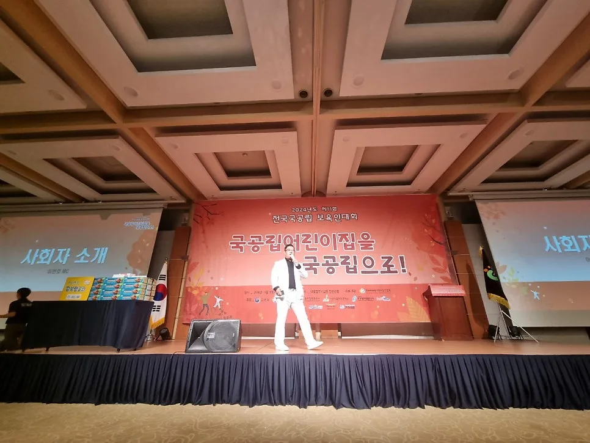

의정부 행사 준비 · 2026년 11월 21일
송년회 사회자 섭외, 의정부에서는 무엇부터 정할까요
송년회 사회자 섭외는 우리 회사가 연말에 어떤 시간을 함께 보낼지 정하는 일부터 시작합니다. 격식을 갖춘 마무리가 필요한지, 동료끼리 편하게 어울리는 모임이 필요한지에 따라 사회자가 맡을 역할도 달라집니다.
의정부에서 준비하는 기업 담당자라면 행사 목적과 참석자 구성을 먼저 한 문장으로 적어 보세요.

- 공식 순서 중심인지 동료 간 교류 중심인지 먼저 정합니다.
- 회사 문화를 설명하고 피하고 싶은 진행 방식도 함께 전합니다.
- 사회자 진행과 레크리에이션, 음향의 범위를 나눠 협의합니다.
- 문의 단계에서는 확정된 조건과 아직 정하지 못한 조건을 구분합니다.

1. 송년회 사회자 섭외 전에 모임의 중심을 정합니다
한 해를 돌아보는 인사말과 회사의 메시지가 중심인 모임도 있고, 평소 대화가 적었던 동료들이 어울리는 시간이 중심인 모임도 있습니다. 사회자에게 둘 다 잘해 달라고 요청하기 전에 우선순위를 정하면 제안받은 구성을 비교하기 쉽습니다.
공식 행사를 원한다면 인사와 소개가 자연스럽게 이어지는 진행을 살펴봅니다. 교류가 목적이라면 처음 만나는 직원도 부담 없이 반응할 수 있는 대화와 참여 방식을 상담합니다.
부서 간 친목이 목적이어도 모든 사람이 무대에 나와야 할 이유는 없습니다. 식사를 하며 편하게 지켜볼 수 있는 시간과 함께 참여하는 시간의 균형을 회사 분위기에 맞춰 생각합니다.
2. 연말 모임의 모습에 따라 요청을 나눕니다
| 원하는 연말 모임 | 사회자와 나눌 이야기 | 담당자가 먼저 정할 것 |
|---|---|---|
| 격식 있는 마무리 | 인사말과 공식 순서의 연결 | 반드시 전달할 회사 메시지 |
| 동료 간 교류 | 자리에서 시작하는 참여 방식 | 부서 구성과 서로 아는 정도 |
| 공식 순서와 놀이 결합 | 분위기를 바꾸는 연결 방식 | 공식 구간과 교류 구간의 비중 |
| 차분한 감사 모임 | 짧고 담백한 소개와 마무리 | 피하고 싶은 표현과 연출 |
이 표는 어느 형식이 더 낫다는 뜻이 아니라 상담 방향을 정하기 위한 구분입니다. 공식 순서가 많으면 그 사이에 게임을 촘촘히 넣기보다 행사 전체가 산만해지지 않는 흐름을 먼저 살핍니다.
진행 스타일은 재미있다는 말보다 구체적으로 설명합니다. 차분한 설명을 원하는지, 가벼운 질문을 주고받고 싶은지, 경쟁보다 협력 놀이를 원하는지 실제 요청으로 바꾸어 전달합니다.
3. 회사 문화에 맞는 참여 방식을 살핍니다
입사 시기와 직무가 서로 다른 직원들이 모인다면 회사 안에서만 통하는 농담이 낯선 사람도 있습니다. 사내 이야기를 활용하더라도 특정인을 곤란하게 만드는 별명이나 사적인 질문은 빼도록 미리 협의합니다.

대표자가 나와 겨루는 방식과 모두가 앉아서 반응하는 방식은 참여의 부담이 다릅니다. 눈에 띄는 참가자만 중심이 되지 않도록 응원과 선택, 함께 답하기 등 여러 참여 방식을 사회자와 이야기합니다.
음주 여부를 게임의 조건으로 삼거나 직급이 낮다는 이유로 발표를 맡기는 구성은 피합니다. 연말 모임의 취지가 감사와 교류라면 그 취지에 맞지 않는 경쟁은 덜어내는 편이 좋습니다.
4. 사회자와 프로그램의 범위를 함께 비교합니다
사회자만 필요한지 레크리에이션까지 필요한지 구분해서 문의합니다. 이미 회사에서 정한 프로그램을 연결하는 역할과 참가자의 반응에 따라 놀이를 이끄는 역할은 준비 내용이 다릅니다.
섭외 비교는 진행자 이름만이 아니라 맡을 범위까지 맞춰 봅니다. 소개와 마무리, 참여 게임, 현장 음향 중 무엇을 상담하는지 나누어 적으면 서로 다른 제안을 같은 조건에서 살펴볼 수 있습니다.

진행자가 사용할 음향이 장소에 있는지, 별도 상담이 필요한지도 범위에 포함합니다. 장비가 있다는 사실만으로 행사에 바로 사용할 수 있다고 판단하지 말고 장소 담당자에게 사용 조건을 확인합니다.
5. 의정부 기업 모임의 상담 조건을 정리합니다
의정부(경기도 의정부시)에서 기업 송년회 · 기념식을 준비한다면 회사 이름보다 행사 성격을 먼저 알려 주세요. 같은 연말 모임이라도 직원끼리 모이는 자리인지 외부 초청 손님이 함께하는 자리인지에 따라 소개 방식이 달라집니다.
의정부는 노원과 맞닿아 있는 운영 지역입니다. 지역명만으로 장소나 진행 조건이 정해지는 것은 아니므로 실제 행사장과 원하는 진행 시간을 별도로 전달합니다.
장소를 아직 정하지 않았다면 미정이라고 적고 예상하는 실내 공간과 참석자 구성을 설명합니다. 확정되지 않은 조건을 임의로 채우기보다 지금 상담할 수 있는 범위를 정하는 편이 낫습니다.
운영 지역에 대한 기본 안내는 의정부 행사 안내에서 확인할 수 있습니다. 지역을 이유로 특정 장소의 음향이나 무대 조건이 같을 것이라고 가정하지 않습니다.
6. 문의에는 원하는 분위기와 피할 방식을 남깁니다
문의할 때는 행사 날짜와 장소, 참석 예정 인원, 예상 진행 시간, 공식 순서 유무를 정리합니다. 그다음 희망하는 분위기와 피하고 싶은 진행 방식을 짧게 덧붙이면 상담의 출발점이 분명해집니다.
힐링엔터테인먼트는 대표 MC 이현호의 진행과 레크리에이션, 음향 등 필요한 범위를 상담합니다. 회사가 이미 준비한 부분을 알려 주고 추가로 필요한 역할을 나누어 협의해 주세요.
행사의 목적에 맞는 진행을 고르는 것이 섭외의 기준입니다. 기업 행사 안내를 살펴보고 자동 견적서 또는 견적 문의로 조건을 남겨 주세요.
자동 견적서는 공개 금액표가 아니라 필요한 항목을 정리하는 용도로 이용합니다.
자주 묻는 질문
송년회 사회자와 레크리에이션 진행자는 따로 정해야 하나요?
행사에서 필요한 역할부터 나누어 상담합니다. 공식 순서만 맡길지 참여 게임까지 함께 요청할지 정한 뒤 한 진행자가 담당할 범위를 협의할 수 있습니다.
조용한 분위기의 회사도 사회자를 문의할 수 있나요?
원하는 분위기를 차분한 소개, 짧은 대화, 선택적인 참여처럼 구체적으로 알려 주세요. 큰 반응을 유도하는 방식이 필요한지부터 회사 문화에 맞춰 상담합니다.
장소를 정하기 전에는 무엇을 전달하면 되나요?
의정부라는 지역과 행사 목적, 참석자 구성, 예상 시간을 먼저 전합니다. 장소는 미정으로 남기고 확정 후 실제 공간과 음향 조건을 추가로 확인합니다.
행사 날짜가 정해지셨나요?
날짜 · 지역 · 인원 · 행사 종류만 알려 주시면 행사에 맞춰 상담 · 견적을 안내드립니다. 행사 중엔 통화가 어려우니 문자 · 카톡을 남겨 주세요.